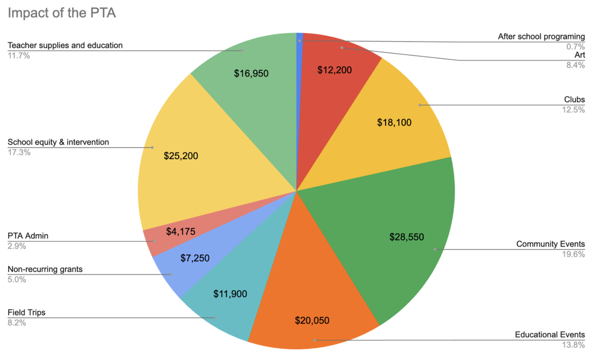
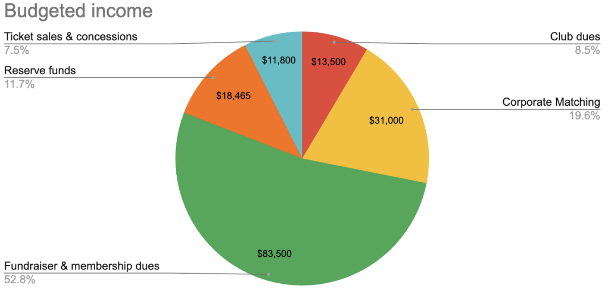

What Does the PTA Fund?
The PTA supports a wide range of activities and programs that enhance our children's education and school experience, including:
- Classroom resources and supplies for teachers
- Teacher training, appreciation, and professional development opportunities
- Recess equipment, gaga ball pit, and soccer goals
- Field trips and special school events
- Enrichment programs like music, drama, and STEM activities
- School-wide art projects, art enrichment, and art supplies
- Literacy and math-focused events like Literacy Night and Math Challenges
- On-campus workshops, assemblies, and STEM Symposium
- Emergency preparation, health screenings, and Mileage Club
- Field Day and Walk to School Week
- Events like the Carnival, Dance Night, Fall Family Night, Movie Night, and Pancake Breakfast
- Community engagement programs like Eagles RISE and Family and Community Engagement
Impact of the PTA

How does the PTA pay for services?
The PTA relies on a few key sources of income to fund our programs:
- Fundraising events (e.g., the Warrior Run)
- Corporate matching donations from employers
- Membership dues
- Ticket and concession sales at PTA sponsored events
- Remaining funds left over from prior years

Why $155 per student?
The PTA does our best to make our dollars go as far as possible. Even in the face of rising costs and inflation, we have not raised our ask in 3 years! We are so proud of how much we accomplish and the high quality of programing we continue to provide to our students.
How you can help
We kindly ask each family to contribute as much as they can. Every dollar helps, and if you can donate more than $155, it will greatly support the school! Donations can be made online, by cash, or by check payable to Ben Franklin PTA. All donations are 100% tax-deductible.
Thank you for your generosity and continued support of our students and school!
Questions? Reach out to fundraising@mybenfranklinpta.org.